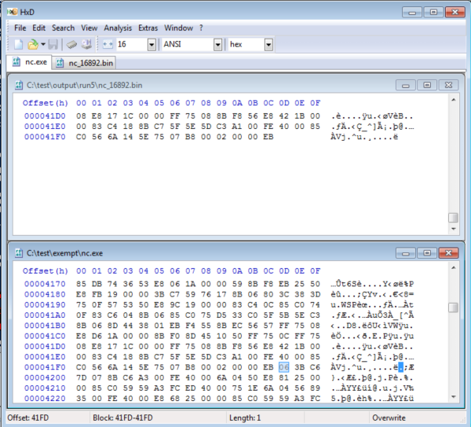

# Antivirus Evasion - File Splitter + Hex Editor
Old technique.
Originally from here? -
http://getdsplit.class101.orgYou split the file into multiple pieces and scan them with antivirus to find the signature that's being detected.
Then you hex edit out the signature.
But you have to be careful not to break the functionality of the binary.
Signature-based products will always struggle with this technique.
Links•
https://vishalhacker.wordpress.com/2012/09/16/hexing-using-dsplit-to-hide-trojans-from-antivirus-detection/• Find-AVSignature -
https://obscuresecurity.blogspot.com/2012/12/finding-simple-av-signatures-with.htmlTools•
dsplit.exe ◇ Several of the versions of "DSplit.exe" available on the internet contain malware
• Python alternative to
dsplit.exe -
https://github.com/rzwck/pydsplit/blob/master/pydsplit.py• PowerSploit's
Find-AVSignature## General Premise
1. Split the binary into multiple parts, usually 1000 block intervals
2. Scan those files with your chosen antivirus software
3. Find the earliest block that gets detected
4. Split that binary block into 100 block intervals
5. Scan
6. Split the earliest block that gets detected into 10 block intervals
7. Scan
8. Split the earliest block that gets detected into 1 block intervals
9. Scan
10. Find earlist block that gets detected -> open with hex editor to identify the byte
11. Open original binary, find byte, edit out with hex editor.
## How-to
### Split binary
pydsplit.py
python pydsplit.py [startoffset] [block size] [filename]python pydsplit.py 0 1000 binary.exePowerSploit
Find-AVSignature -Startbyte 0 -Endbyte max -Interval 10000 -Path c:\test\exempt\nc.exe### Edit
Edit with HxD or HexWorkshop
